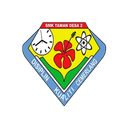

MY JOURNEY
Academic Journey
Every stage of my education has strengthened my technical knowledge, problem-solving skills, and passion for developing meaningful digital solutions.
Bachelor of Computer Science
(Database Management)
UNIVERSITI TEKNIKAL MALAYSIA MELAKA (UTeM)
Thank you for visiting my portfolio. I am passionate about creating meaningful digital experiences through clean design, user-friendly interfaces, and continuous learning in Computer Science.
Diploma in Electronic Engineering
(Computer)
POLITEKNIK SULTAN IDRIS SHAH (PSIS)
Completed my diploma with a CGPA of 3.22, where I built a solid foundation in programming, computer systems, embedded technology, networking, and electronics. This programme strengthened my analytical thinking and inspired me to pursue Computer Science.

Sijil Pelajaran Malaysia (SPM)
in Accounting
SMK TAMAN DESA 2 (SMKTD2)
Completed my secondary education while
developing a strong interest in mathematics,
technology and computer-related subjects.
This period sparked my curiosity about
programming and motivated me to continue my
studies in the field of technology.
2015 - 2019
MY PROGRESSION
Building Knowledge Step by Step
My educational journey reflects continuous growth, beginning with a strong foundation in secondary education, advancing through engineering studies, and currently specialising in database management. Every stage has equipped me with valuable knowledge, practical skills, and a passion for creating meaningful digital solutions.
Foundation
Built strong academic fundamentals and developed an early interest in computers and technology.
Technical Skills
Strengthened my programming, electronics, networking, and problem-solving abilities through diploma studies.
Specialisation
Currently focusing on database management, web technologies, software engineering, and Human-Computer Interaction.
WHAT I GAINED
Skills Beyond The Classroom
My academic journey has provided more than qualifications. It has helped me develop the technical knowledge, critical thinking, and interpersonal skills needed to continue growing as a future computing professional.
Knowledge
Built a strong understanding of databases, programming, software engineering and web technologies.
Problem Solving
Learned to analyse challenges, evaluate alternatives and create effective solutions through practical assignments.
Teamwork
Worked with classmates on projects, presentations and system development throughout my studies.
Continuous Learning
Always eager to explore new technologies, improve my coding skills and learn from every project.
NEXT CHAPTER
Education Built My Foundation
Every stage of my education has prepared me to take on more challenging projects. Explore some of the systems and applications I have developed throughout my learning journey.